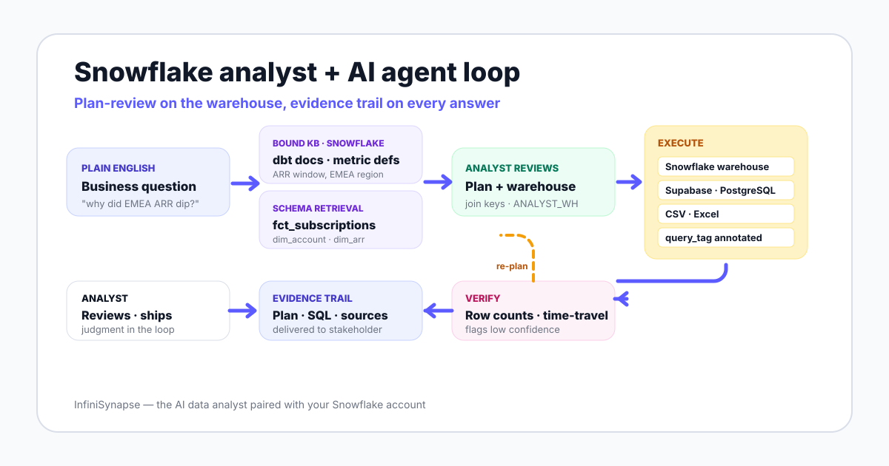

The workflow is not "AI writes SQL faster." The shift is workflow ownership. The agent retrieves context, plans, runs, and verifies. The analyst reviews plans and owns the definitions the agent reads. Anthropic frames this pattern as a system that directs its own processes and tool usage under human review.

To make the shift concrete, here is the same analyst's Tuesday from the role guide — once before AI augmentation, once after. The numbers are illustrative based on what we see across Snowflake teams piloting agents, not from any single account.
| Block | Before AI — typical day | With AI in the loop |
|---|---|---|
| Ad-hoc pulls | 8 Slack requests answered by hand-written SQL | 2 plans reviewed and approved · 6 self-served by stakeholders through the agent |
| dbt model work | 30 minutes squeezed in between pulls | 90 minutes of focused work on metric definitions |
| Dashboard tuning | Reactive — fix when someone complains | Proactive — agent surfaces a slow-query alert with a proposed fix |
| Stakeholder explanation | 15 minutes per question by Slack | 40 minutes per week framing the right questions and reviewing answers |
| Plan review | Not a category | 15 minutes total across the day, in 1-2 minute reviews |
| Warehouse cost watch | End-of-week glance at the bill | Per-query view via the agent's query_tag annotation |
An AI-augmented Snowflake analyst does fewer pulls, more definitions, and reviews plans like a code reviewer reads pull requests.
Here is a five-stage walkthrough on actual Snowflake objects. The question is the one a CRO would Slack you on a Tuesday morning.
"Why did our SaaS expansion revenue dip in EMEA last month?"
You type the question into the agent. Before touching the database, the agent retrieves three things from the knowledge base bound to your Snowflake connection: the expansion ARR metric definition (net add ARR from existing accounts, computed on a 90-day window), the EMEA region definition (countries by ISO code, not by billing currency), and the relevant dbt model docs for dim_arr and fct_subscriptions.
This step is the agent's safety net. Without it, "expansion ARR" might silently get computed on a calendar-month boundary that no one in finance recognizes.
The agent searches the Snowflake schema and proposes a plan: pull from fct_subscriptions joined to dim_account on account_id, filter to EMEA accounts, compute the 90-day rolling expansion ARR, compare last month against the trailing three. The plan also specifies the virtual warehouse — ANALYST_WH at size Small — and tags the query with query_tag = 'emea_arr_investigation' for cost tracking.
You read the plan. You catch one thing: the agent proposed joining on email in an earlier draft because dim_account has both. You comment that the canonical join key is account_id. The agent re-plans. Total time: 90 seconds.
The agent runs the query under your scoped role. It returns: expansion ARR in EMEA dropped 14% month-over-month. The agent does not stop there. It runs a second query to decompose the drop by account size and finds the drop is concentrated in three accounts that renewed on 90-day cycles landing in May rather than April.
The agent sanity-checks the result. It verifies the row count matches the count from the previous month's run, and uses Snowflake time-travel to confirm fct_subscriptions has not been backfilled since the last finance close.
You receive the answer with the plan, the two queries it ran, the dbt model versions used, the knowledge base entries cited, and the verification log. You forward the whole bundle to the CRO.
The end-to-end clock: under five minutes. The analyst time spent: about two and a half minutes — most of it in plan review and the final forward.
This is the moat under the moat. The database tells the agent what happened. The bound knowledge base tells the agent what those numbers mean to your business.
On Snowflake specifically, the knowledge base entries that earn their keep are these:
| KB entry type | Snowflake-specific example | What it prevents |
|---|---|---|
| Metric definitions | "Expansion ARR uses a 90-day window from fct_subscriptions" | Agent silently uses calendar-month boundaries finance does not recognize |
| dbt model docs | dim_arr column meanings, refresh cadence, late-arriving data window | Agent joins on a stale snapshot or a deprecated field |
| Data dictionary | account_status values: active, paused, churned, prospect | Agent counts prospects as customers, or excludes paused as churned |
| RevOps playbooks | "For renewal questions, always include the 90-day post-renewal window" | Agent ships a result that misses the standard analyst gotcha |
| Region maps | EMEA defined by ISO country code, not billing currency | UK accounts paid in USD get misclassified out of EMEA |
The agent retrieves from this knowledge base as a tool call before writing SQL. The pattern is the same retrieval-augmented generation primitive described on Wikipedia, applied specifically to business semantics — and reinforced by recent surveys of data-agent design including A Survey of Data Agents (2025).
Most teams hit Snowflake's natural ceiling not on a hard query, but on a question whose data lives in two places.
The InfiniSynapse pillar guide describes a documented demonstration: matching customers across JD and Tmall by phone number while joining a customer-name CSV from CRM, all in one request. The shape transfers directly to Snowflake teams. Substitute Snowflake for one of the e-commerce databases and a customer-success Supabase project for the other.
A real Snowflake-team question of this shape: "Join the fct_subscriptions table in our Snowflake warehouse with the support ticket volume in our customer-success Supabase project, and add the NPS scores from the survey CSV my PM emailed me." Three sources, one request, one evidence trail.
InfiniSynapse runs that cross-source join through an LLM-optimized intermediate representation — InfiniSQL — that connects to a multi-source execution layer. The agent retrieves schema from each source, plans the join, executes against each, and verifies the joined row count is sane before returning a chart. The traditional alternative is an ETL project: migrate Supabase data and the CSV into Snowflake, standardize fields, write the join, then visualize.
This is the use case where AI agents on Snowflake differentiate hardest. Read more in the AI database query pillar guide, and see the parallel pattern on Supabase in Supabase data analysis with AI.
The honest list is below. It is not "the analyst becomes obsolete" or "nothing changes." It is a re-allocation of where the human attention goes.
The role guide on data analyst Snowflake walks through these in more depth as a hiring lens.
Plan review is the skill that did not exist in your job description three years ago. It is now the highest-impact hour of your week.
InfiniSynapse exposes plan review through an explicit Plan mode: the agent shows the plan, you approve, edit, or reject. The pattern has academic roots in the ReAct paper, which showed that interleaving reasoning steps with actions reduces error against single-shot generation.
account_id or on a less reliable surrogate like email or name?You do not read every plan in depth. A senior Snowflake analyst learns to scan in under two minutes — checking the six points above, approving the safe 70% of plans, editing the 25% that need a tweak, and rejecting the 5% where the agent fundamentally misread the question.
Generic SQL agents trip on Snowflake-specific behavior. A useful agent on Snowflake handles each of the items below — or fails gracefully and tells the analyst.
| Gotcha | What goes wrong without handling | How a capable agent handles it |
|---|---|---|
| Time-travel boundaries | Agent reads a backfilled snapshot and gives a different answer than the finance close | Verifies the table has not been time-traveled into since the last close; flags if it has |
| Query result caching | Same question 10 minutes later returns the cached answer even after a data refresh | Detects cache hits and re-runs against fresh data when verification needs it |
| ROLE context inheritance | Agent inherits ACCOUNTADMIN from the session and runs everything as admin | Explicitly switches to a scoped role with USE ROLE in every session |
| VARIANT and ARRAY columns | Agent treats semi-structured payloads as opaque blobs and returns nothing useful | Recognizes VARIANT columns and uses LATERAL FLATTEN or path access |
| Warehouse auto-suspend | Cold warehouse startup adds latency the agent does not explain | Picks a warehouse already warm, or warns the analyst that the first query will be slow |
| Micro-partition pruning | Agent writes a query that scans every micro-partition because the filter is on a non-clustered column | Reads the query profile and proposes a clustering key when scans are wasteful |
An AI agent on Snowflake is not a finished system. The honest limits we name in every pilot:
If your Snowflake account is not yet ready for an agent — definitions ambiguous, no semantic layer, no scoped roles — the honest first step is hiring or up-skilling, not buying. Start with the Snowflake analyst role guide and the AI data analyst explained category page.
Connect a Snowflake account read-only, seed ten metric definitions into a knowledge base, and run one cross-source question that joins Snowflake with a CSV. Watch the plan, review it, then run. One real run is worth more than any feature list — including this page.
Try InfiniSynapse onlineLast updated: 2026-06-15 · Next scheduled review: 2026-09-15
The worked example, gotcha table, and plan-review checklist on this page are synthesized from InfiniSynapse product demonstrations on Snowflake, Snowflake official documentation, the BIRD and Spider benchmarks, agent research (ReAct, Anthropic's Building Effective Agents, A Survey of Data Agents 2025), and governance frameworks (NIST AI RMF, EU AI Act, ISO/IEC 42001).
Conflict of interest: InfiniSynapse publishes this page and sells in the AI-augmented data analyst category. We mitigate bias by naming the honest limits up front, surfacing the cases where hiring or up-skilling beats buying an agent, and citing external benchmarks for every accuracy claim.
Update cadence: Reviewed every 90 days for Snowflake feature changes, agent capability changes, and shifts in regulatory framing.